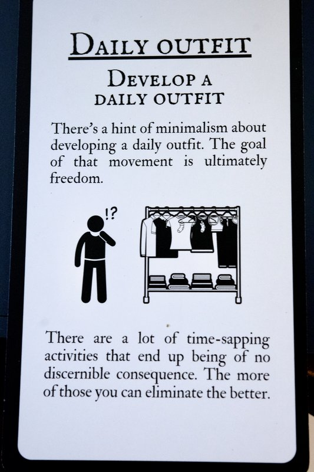

daily wardrobe
- A capsule wardrobe is a small, curated collection of versatile clothing that mix and match to create many outfits with minimal pieces.
| Step | Action | Example |
|---|---|---|
| 1 | Choose a color palette | Neutral base + 2 accent colors |
| 2 | Pick essential tops | White tee, black vest , chambray shirt, etc. |
| 3 | Select versatile bottoms | Dark jeans, black trousers, skirt |
| 4 | Add layering pieces | Blazer, cardigan, denim jacket |
| 5 | Include 2–3 pairs of shoes | Sneakers, flats, ankle boots |
| 6 | Accessorize minimally | Belt, simple jewelry, scarf |
| 7 | Rotate seasonally | Swap out 3–5 pieces per season |
- this is part of a stoic challenge deck my son & I attempt to complete
